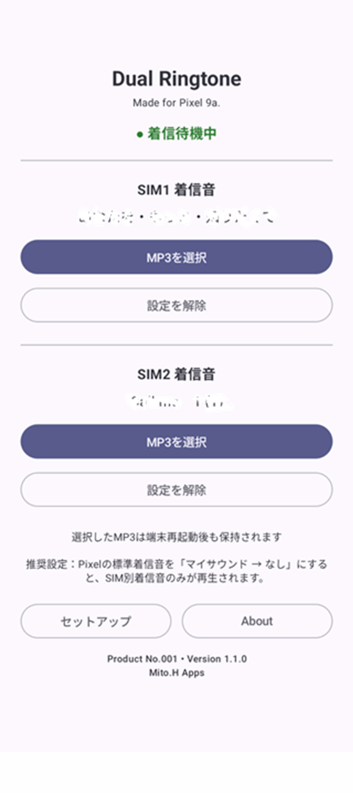
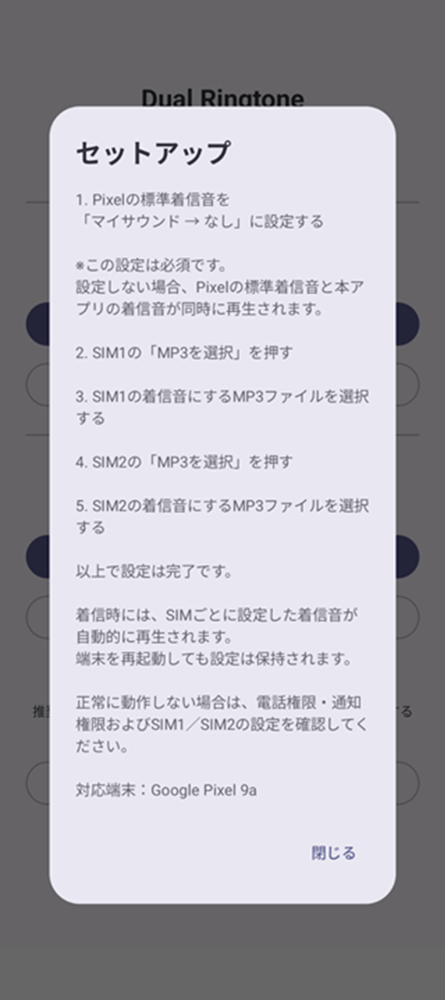
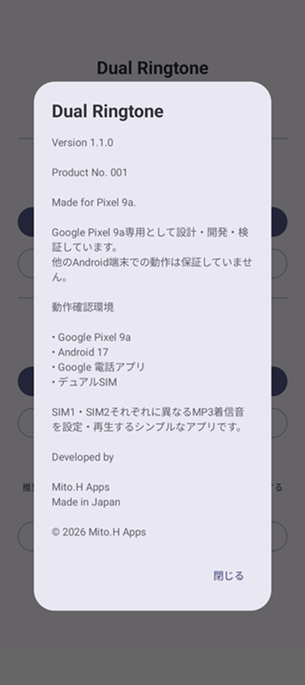

Made for Google Pixel 9a
会社SIMと個人SIM。
着信音を、別々に。
Dual Ringtoneは、Google Pixel 9aのデュアルSIMで SIM1とSIM2に別々のMP3着信音を設定するためのAndroidアプリです。 電話が鳴った瞬間に、どちらの番号への着信かを音で聞き分けられます。
正式な開発・検証対象：Google Pixel 9a

Google Pixel 9aで「SIMごとに着信音を変えたい」
Google Pixel 9aでデュアルSIMを使っていると、 会社用SIMへの着信なのか、個人用SIMへの着信なのかを、 画面を見る前に音で聞き分けたいことがあります。
しかしGoogle Pixel 9aでは、標準機能だけで デュアルSIMのSIM1とSIM2に別々の着信音を設定することができません。
Dual Ringtoneは、Pixel 9aでSIMごとに着信音を鳴り分けたいという その一点をシンプルに解決するために作りました。
Pixel標準の着信音設定との違い
Pixel標準
Dual Ringtone
Dual Ringtoneでできること
SIM1 / SIM2を判定
どちらのSIMに着信したかを判定し、 そのSIMに設定した着信音を再生します。
好きなMP3をSIMごとに指定
SIM1用、SIM2用として端末内のMP3ファイルを それぞれ個別に選択できます。
Google Pixel 9a専用設計
実機のGoogle Pixel 9aを正式な開発・検証対象としています。
Pixel 9aでSIM別着信音を設定する方法
- Pixel標準の着信音を「マイサウンド → なし」に設定します。
- Dual RingtoneでSIM1用のMP3を選択します。
- SIM2用に別のMP3を選択します。
- 着信したSIMに対応するMP3着信音が自動再生されます。


Google Pixel 9a専用として設計・検証
Dual Ringtoneは、 Google Pixel 9a、Android 17、Google 電話アプリ、 デュアルSIM環境を基準に設計・検証しています。
対応範囲を広く見せるのではなく、 実際に確認できた環境を明確にしています。
Google Play クローズドテスター募集中
Pixel 9aのデュアルSIM環境で試してくださる方を探しています
SIM1・SIM2への実際の着信、 再起動後の動作、 着信音のループや停止などを確認していただける Google Pixel 9aユーザーを募集しています。
Pixel 9a デュアルSIM着信音のよくある質問
Pixel 9aでSIMごとに着信音を変える方法はありますか？
Dual Ringtoneでは、Google Pixel 9aのSIM1とSIM2に それぞれ別のMP3着信音を設定できます。
Pixel 9a以外でも使えますか？
現在の正式な対応・検証対象はGoogle Pixel 9aです。
SIM1とSIM2に違う曲を設定できますか？
はい。それぞれに別のMP3ファイルを選択できます。
なぜPixel標準着信音を「なし」にするのですか？
Pixel標準着信音とDual Ringtoneの着信音が 二重に鳴るのを防ぐためです。